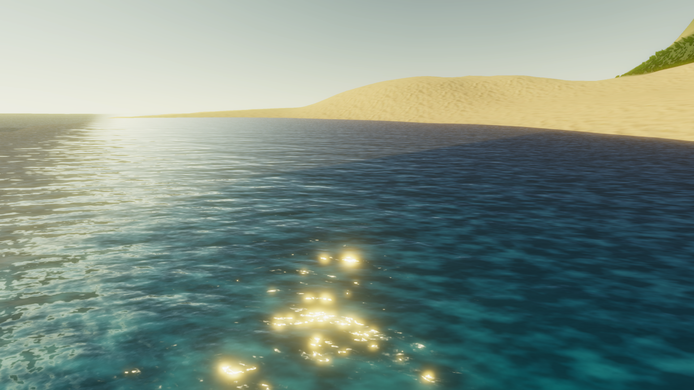
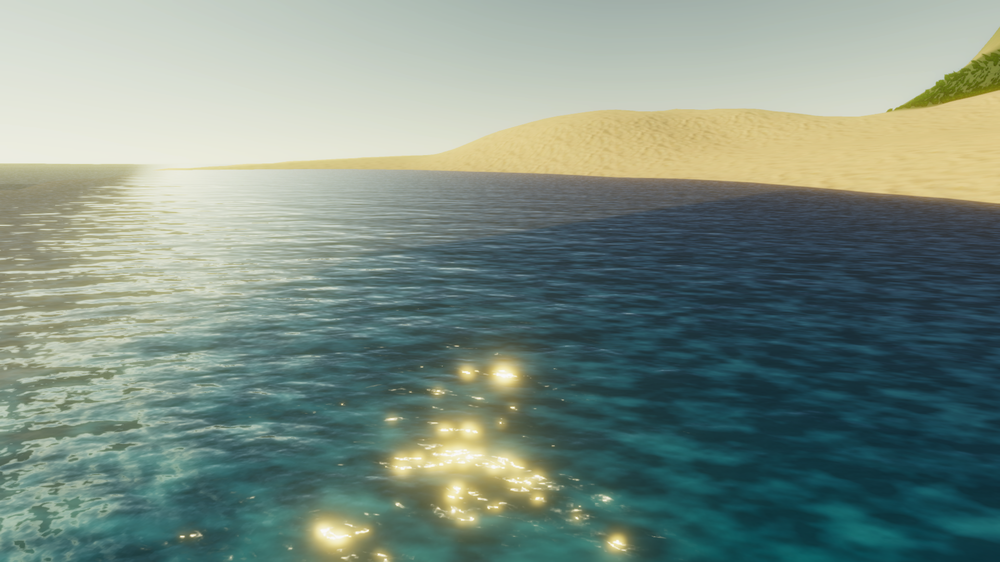

Code Game Jam 2022
La Code Game Jam est un concours en équipe réalisé à Montpellier où il faut créer un jeu vidéo en 30 heures. C'est avec beacoup de travail que notre groupe de 6 étudiants à remporté le prix du public ainsi que le prix design. Nous n'avons pas pu gagner la première place car nous ne pouvions pas avoir tous les prix (Réponse du jury). Code Game Jam 2022
 



Télécharger le jeu
Code Game Jam 2021
La Code Game Jam est un concours en équipe réalisé à Montpellier où il faut créer un jeu vidéo en 30 heures. C'est avec beacoup de travail que notre groupe de 6 étudiants à remporté la première place ainsi que le prix public. Code Game Jam 2021


Télécharger le jeu
Nuit de l'info 2021
Pour ce concours national, en équipe de 6, nous devons réaliser un site Web en 1 nuit. Le thème de cette année était de faire un site qui regroupe les sauvetages en mers par les Dunkerquois SNSM. Nous avons utilisé le PHP. Nous avons remporté différents défis comme réaliser un système de notifiction sur téléphone. Nous avons remporté la 1ere place sur 420 équipes de France. Quelle joie !
Sauvetages du DunkerquoisNuit de l'info 2020
La nuit de quoi ?
Concours Robotique
J'étais en cinquième au collège et j'ai pris des cours en plus où l'on pouvait créer des robots avec des legos et les programmer.